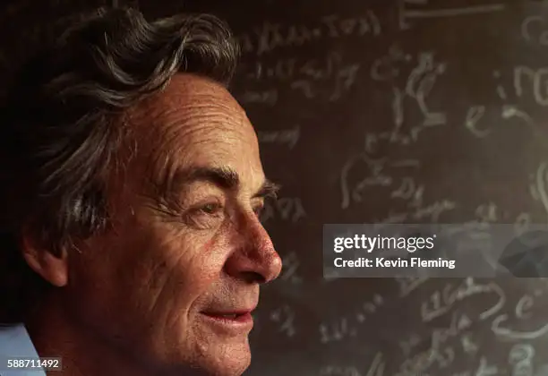

He was an American theoretical physicist who was widely regarded as the most brilliant, influential, and iconoclastic figure in his field in the post-World War II era.
Richard Feynman's glorious life:
- 1918: Born on May 11 in New York, NY.
- 1942-1945: Worked on the Manhattan Project during World War II.
- 1942: Received Ph.D. from Princeton University.
- 1950: Began teaching at the California Institute of Technology (Caltech).
- 1959: Delivered the most famous lecture "There's Plenty of Room at the Bottom," which is considered a foundational talk for nanotechnology.
- 1965: Awarded the Nobel Prize in Physics for his work in quantum electrodynamics.
- 1985: Published his autobiography "Surely You're Joking, Mr. Feynman!".
- 1986: Served on the Rogers Commission to investigate the Space Shuttle Challenger disaster.
- 1988: Passed away on February 15 in Los Angeles, CA.